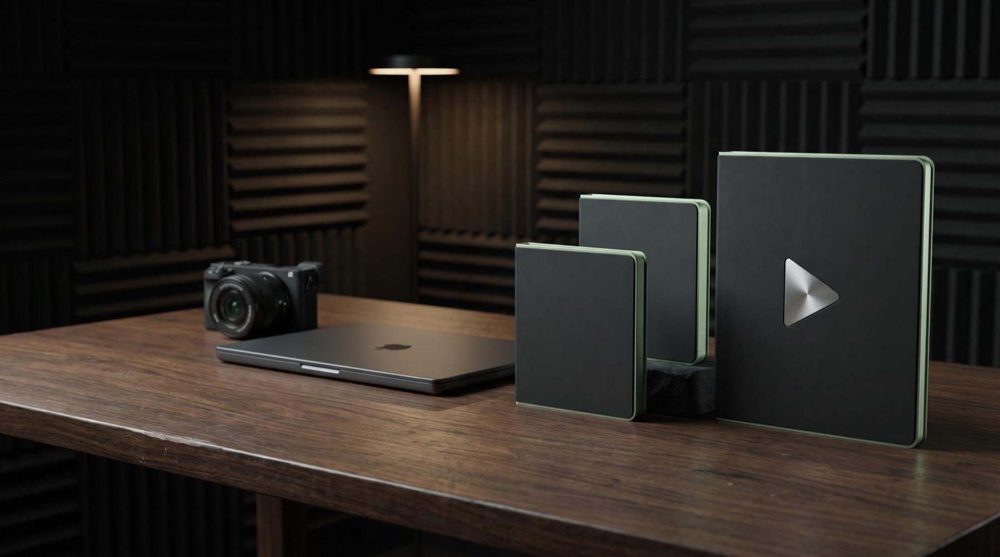

9:16 con subtítulos en español dentro de la zona segura de Instagram y versiones por plataforma a −14 LUFS y pico real de −1,5 dBTP o menos. Probado de principio a fin en Mac con Apple Silicon, Windows y Linux.
PARA QUIENES YA USAN CLAUDE CODE Y GRABAN A CÁMARA
Tu editor de video en español
que aprende cómo editas tú.
Le das 1–3 videos que te gusten y los analiza en tu computador: mide tu ritmo y tus subtítulos. Reels, Shorts, TikTok o YouTube: transcribe en español, quita pausas y aire muerto, pone subtítulos o gráficos sin tapar tu cara y verifica el MP4. Tú apruebas el resultado.
Para usuarios de Claude Code o CodexAbres la carpeta en Claude Code o en Codex y le pides la edición en español.
Ver precio fundador — $97 USD ↓
Primeros 30 compradores · luego $137 · Garantía de primera edición de 15 días · Verificado en Mac Apple Silicon / Windows / Linux
GRABAR ES SOLO EL COMIENZO
Ya grabaste.
Ahora toca convertir
ese material en contenido.
Abrir el clip es fácil. Decidir qué cortar, corregir nombres, organizar gráficos y revisar la exportación es lo que separa una grabación de un video terminado.
Video Editor pone esas etapas en un flujo documentado. En lugar de reconstruir las instrucciones con cada proyecto, partes del mismo sistema y le das una dirección concreta a tu IA.
Así funciona el proceso ↓QUÉ EDITA
Del reel al video de YouTube.
Probado: edición completa automática de un clip 16:9 en Mac con Apple Silicon, Windows y Linux (cortes, audio y versión para YouTube). Los gráficos avanzados y el color pueden necesitar un ajuste.
De un video largo a varios clips verticales con subtítulos: probado en Mac con Apple Silicon. Tú revisas y apruebas cada clip.
El formato se detecta solo: vertical → video corto; horizontal → YouTube. Las rutas con Premiere Pro, DaVinci Resolve, CapCut y Final Cut Pro están incluidas, igual que el estilo Talking Head Explainer. Premiere Pro 2022 en español se probó por partes (gráficos, efectos de sonido, música, pulido de audio y capa de color Lumetri); ninguna ruta se ha probado aún de principio a fin.
APRENDE TU ESTILO
Tres pasos, y cada edición
sale con tu estilo.
Escribe /empezar
Máximo 5 preguntas, con valores por defecto, y un chequeo de tu equipo (sistema, espacio libre y herramientas) antes de invertir tiempo.
Dale 1–3 videos que te gusten
Los analiza en tu computador: cortes por minuto, pausas, ritmo de habla y subtítulos. Te dice en español qué aprendió, en un resumen que puedes leer y cambiar.
Edita y corrige una vez
Cuando corriges algo, te pregunta «¿siempre así?» y lo guarda en tu perfil. Si quieres saber por qué edita como edita, te lo explica.
Aprende de videos que te gustan; no promete editar «exactamente como tú» ni copiar a otro creador.
LA PREGUNTA HONESTA
¿Por qué pagar
si hay skills gratis?
Existen skills gratuitas de edición para Claude Code, casi todas en inglés. Si te gusta montar tu propio flujo, pruébalas. Este kit es para quien quiere el flujo ya armado y probado en español, y prefiere no pasar un fin de semana configurándolo.
- Las skills gratis editan igual para todos. Este kit aprende de videos que te gustan (se analizan en tu computador) y aplica tu ritmo y tus subtítulos.
- Detecta el idioma de cada clip y alinea con el modelo español: tildes y tiempos por palabra. Los nombres que Whisper oye mal (p. ej. «Clot» por Claude) se corrigen con una lista que tú amplías.
- Convierte los clips HDR del iPhone a SDR y lee la rotación de los verticales antes de elegir el formato.
- Entrega versiones por plataforma (Reels, TikTok, YouTube) a −14 LUFS y pico real de −1,5 dBTP o menos.
- Marca cuándo miras a un lado, arriba o abajo (por ejemplo, al leer un guion), con la frase que decías, también en videos horizontales; solo recorta silencio y nunca borra palabras: te muestra la frase para que tú decidas.
- Los subtítulos quedan siempre dentro de la zona segura de Instagram.
- Coloca los subtítulos midiendo dónde está tu cara, y compruebas en el render final que no la tapan.
- Nunca toca tu original; la exportación final solo se crea cuando la apruebas.
- Verifica el MP4 final: duración, audio y decodificación.
- Transcripción local con WhisperX: sin claves de API ni coste por minuto.
- Subtítulos renderizados con HyperFrames. Si lo montas tú con el ffmpeg de Homebrew, quemar los subtítulos falla: ese ffmpeg no trae el filtro
subtitles(lo comprobamos el 25/09). - Guía visual de 10 lecciones en español, agente de ayuda (incluido; aún sin prueba formal), 165 iconos animados con fondo transparente.
LO QUE CUESTA EDITAR HOY
Una vez, en lugar de cada mes.
Submagic Pro (US$276), Descript Creator (US$288) o CapCut Pro (US$180), en plan anual. Las que solo quitan silencios cuestan menos: TimeBolt US$97/año, AutoCut desde US$79/año.
Por 8 reels en Latinoamérica: desde US$5 por reel en plataformas freelance hasta US$50 o más con un editor con experiencia.
Precio fundador. Además necesitas Claude Code (desde unos US$20/mes con Claude Pro) o Codex. Si ya lo pagas, no añades otra mensualidad; si no, súmalo a la comparación.
Precios públicos consultados el 25/09/2026 en submagic.co/pricing, descript.com/pricing, capcut.com, timebolt.io/pricing y autocut.com/en/pricing; editores: prolatamwork.com y ofertas en Workana. Redondeados, en USD, sin impuestos; varían por país y plan. Comparación orientativa, no una promesa de ahorro.

UN PROCESO QUE PUEDES REPETIR
De un clip a tu primera edición, paso a paso.
Abre el kit y escribe /empezar
Sigue la guía para abrir la carpeta en Claude Code o Codex. Empieza con un video propio de 20–60 segundos y un objetivo claro.
ENTRADA Tu grabación + tu objetivo
Pide la edición con claridad
Usa la plantilla de la guía para escribir tu instrucción. Revisa la transcripción, los cortes y el borrador con el agente.
PROCESO Instrucciones + herramientas
Revisa, ajusta y exporta
Comprueba el borrador, pide ajustes concretos y verifica el archivo exportado antes de publicarlo.
SALIDA Un resultado que tú revisas
Las funciones disponibles dependen de tu sistema, las herramientas instaladas y la ruta de edición elegida.
LA ENTREGA COMPLETA
Las tres piezas que necesitas
para empezar con dirección.

Un proceso que no empieza de cero.
Instrucciones por etapa, herramientas y estilos iniciales para trabajar con tu material. Detecta el idioma hablado, mide dónde está tu rostro antes de colocar textos y verifica el archivo final. Añade tu marca y conserva un proceso que puedas volver a usar.
El siguiente paso, explicado.
Diez lecciones visuales con instrucciones para copiar, selección de ruta y una plantilla para escribir tu instrucción. Comprueba cada avance con señales de éxito y una lista de revisión.
Ayuda donde suelen aparecer las dudas.
Consulta la documentación del kit para orientarte sobre instalación, uso y errores. Agente de ayuda para Claude Code que responde con la documentación del kit (incluido; aún sin prueba formal). En Codex, una guía de ayuda en texto.
ASÍ LE DAS DIRECCIÓN AL AGENTE
Una instrucción concreta.
Un resultado que puedes revisar.
La guía te ayuda a definir el material, el formato y las decisiones que quieres conservar.
«Edita este clip en vertical. Conserva completa la explicación de mi oferta, corrige estos nombres y muéstrame los cortes antes de exportar. Mantén el original intacto».
Ejemplo de instrucción. El resultado depende del material, la configuración y las herramientas disponibles.
ENCUENTRA TU PUNTO DE PARTIDA
Para quien quiere
dirigir su contenido
con más claridad.
Encaja contigo si…
- Grabas videos explicando, enseñando o presentando una oferta.
- Quieres trabajar con tu propio material y personalizar tu estilo.
- Quieres revisar cada entrega antes de publicarla.
Lo que necesitas
Abres la carpeta en Claude Code o en Codex y le pides la edición en español. Necesitas un computador, tu cuenta de Claude o ChatGPT y unos 10 GB libres (Claude y ChatGPT: plan de pago, desde unos US$20/mes). Probado automáticamente de principio a fin en Mac con Apple Silicon, Windows y Linux, sin aplicación de edición (ruta chat-only). En Linux, el instalador te muestra un comando para instalar las herramientas base. El uso de IA y las aplicaciones opcionales se pagan por separado.
El kit se abre como proyecto local. El chat web básico de Claude o ChatGPT no ejecuta por sí solo estas herramientas.
ANTES DE COMPRAR
Comprueba tu punto de partida.
Dos comprobaciones rápidas. No inspeccionamos tu equipo ni subimos archivos.
PRECIO FUNDADOR
Los primeros 30
entran a $97.
A cambio, te pido tu opinión después de tu primera edición. Al completar los 30 cupos, el precio pasa a $137. Actualizo el contador a mano cada día con las ventas de Gumroad.
Bono fundador: una llamada 1 a 1 de 30 minutos para aprender a crear agentes como este. La reservas con el enlace que llega en tu correo de compra. El soporte del kit sigue siendo por correo.
¿Quieres prepararte primero? Abre la guía gratuita ↗QUEDAN 30 DE 30 CUPOS · ACTUALIZADO A MANO EL 01/10VIDEO EDITOR KIT
$97USD · luego $137
Pago único · Sin suscripción del kit
- Paquete del agente editor
- Guía visual paso a paso
- Ayuda basada en la documentación
- 165 iconos animados, con fondo transparente
- Plantilla de marca sin personalizar
- Instrucciones para Claude Code y Codex
Requisitos: un computador, tu cuenta de Claude o ChatGPT y unos 10 GB libres. Probado automáticamente de principio a fin en Mac con Apple Silicon, Windows y Linux, sin aplicación de edición (ruta chat-only). En Linux, el instalador te muestra un comando para instalar las herramientas base. En un Mac con Intel real ya pasa lo que antes fallaba: instalar el motor y transcribir en español. La edición completa en Intel sigue en prueba final: si algo falla, escríbenos y te avisamos o te devolvemos el dinero. Abres la carpeta en Claude Code o en Codex y le pides la edición en español.
Comprar el kit en Gumroad — $97 USD ↗Garantía de primera edición de 15 días: si sigues la guía con un clip tuyo de 20–60 s y no logras exportar tu primer video, escríbenos; te ayudamos y, si no lo resolvemos, te devolvemos el dinero.
Pago procesado por Gumroad. Descarga desde el recibo después de pagar. Los impuestos aplicables se muestran antes de confirmar.
ANTES DE DAR EL SIGUIENTE PASO
Resuelve tus dudas antes de comprar.
¿Funciona con Claude y con ChatGPT?
Está preparado para trabajar con Claude Code o Codex en tu computador. Son los entornos que pueden leer la carpeta y ejecutar sus herramientas. Una conversación normal en el navegador no sustituye esa configuración. Algunas conexiones a aplicaciones requieren pasos específicos según el entorno. La edición completa se probó de principio a fin en Mac con Apple Silicon, Windows y Linux, sin aplicación de edición (ruta chat-only). Codex: adaptación incluida; la prueba completa está en curso.
¿Tengo que saber programar?
No. Abres la carpeta en Claude Code o en Codex y le pides la edición en español. La guía trae instrucciones para copiar y explica cada etapa. Empieza con un clip corto y comprueba que tu ruta funciona antes de abordar un proyecto importante.
¿Qué significa editar con IA?
El agente usa instrucciones y herramientas para realizar tareas de edición. Tú proporcionas el material, defines el objetivo y apruebas el resultado. El nivel de automatización depende de las herramientas y la ruta que uses.
¿Qué aplicaciones puedo usar?
La ruta probada de principio a fin es la local, sin aplicación de edición, en Mac con Apple Silicon, Windows y Linux. Premiere Pro está incluido; probado por partes en Premiere Pro 2022 en español (gráficos, efectos de sonido, música, pulido de audio y capa de color Lumetri), aún no de principio a fin. El difuminado de privacidad no está disponible en Premiere 2022: necesita un Premiere más nuevo. DaVinci Resolve, CapCut y Final Cut Pro (en Mac) y el estilo Talking Head Explainer están incluidos, pero aún no se han probado. Si dependes de una de ellas, espera a que la marquemos como verificada.
¿Funciona si hablo en español?
Sí. La transcripción detecta el idioma de cada clip y usa el alineador de ese idioma. Se comprobó con un clip real en español: la transcripción, los cortes y los subtítulos con tildes salieron en español. Si un clip mezcla idiomas, puedes indicar el idioma a mano.
¿El kit modifica mis grabaciones originales?
No. El agente copia tu clip a la carpeta del proyecto y trabaja sobre esa copia; nunca mueve el original. La exportación final solo se crea cuando tú la apruebas y no reemplaza un archivo final que ya exista. Estas protecciones están entre las 11 pruebas automáticas de exportación (con un video de prueba de 2 s) que pasaron el 21/09/2026.
¿Cuánto se descarga la primera vez?
La primera edición descarga una sola vez el motor de transcripción y sus modelos: unos 4,3 GB (5,2 GB en disco); deja unos 10 GB libres. Depende de tu conexión: con 100 Mbps, la descarga sola tarda unos 6 minutos; con 20 Mbps, unos 30. Las ediciones siguientes reutilizan lo descargado.
¿Sirven los videos verticales del celular?
Sí. El kit convierte los clips HDR del iPhone (HLG y Dolby Vision) a SDR antes de editar y lee la rotación de los verticales: la prueba del 25 de septiembre, con un clip vertical HDR de iPhone, terminó en un MP4 vertical de 1080×1920 con los colores correctos. Los clips de Android aún no se han probado.
¿Qué recibo después del pago?
Gumroad: descarga del ZIP (519 MB) desde el recibo y tu biblioteca de Gumroad. Extrae la carpeta completa, abre START-HERE.html y sigue la guía. Es un producto digital: no hay envío físico.
¿Qué se ha comprobado en esta versión?
El 21 de septiembre de 2026 se hizo una edición completa con el ZIP publicado del kit, extraído en una carpeta limpia en macOS por la ruta sin aplicación de edición: un clip vertical de iPhone en español de 22 segundos pasó por transcripción, cortes, audio, subtítulos en español, verificación y export final. Esa prueba destapó siete fallos. Los siete están corregidos en la versión que recibes, la última palabra incluida (el más importante: la transcripción forzaba inglés). También pasaron 11 pruebas automáticas de exportación y protección de archivos (con un video de prueba de 2 s). El 25 de septiembre, la versión 1.2 pasó otra edición completa en una carpeta nueva, con los modelos descargados desde cero: un clip vertical HDR de iPhone salió en SDR con los colores correctos, y la versión para Reels quedó a −14 LUFS. Aún no se ha verificado: Mac con Intel (en su prueba final); un computador sin las herramientas base; las rutas Premiere, Resolve, CapCut o Final Cut; los gráficos y el color automáticos del formato largo 16:9; clips de Android; el agente de ayuda. El 29 de septiembre, la versión 1.4 pasó una edición completa automática (un clip vertical en español con el perfil de estilo y uno 16:9 para YouTube) en Mac con Apple Silicon, Windows y Linux, y la prueba de comprador nuevo con un clip HDR de iPhone en un Mac con Apple Silicon. Las conexiones a otras aplicaciones deben comprobarse en tu computador.
¿Hay garantía o devolución?
Sí. Garantía de primera edición de 15 días: si sigues la guía con un clip tuyo de 20–60 s y no logras exportar tu primer video, escríbenos; te ayudamos y, si no lo resolvemos, te devolvemos el dinero. Vale en cualquier computador. En un Mac con Intel real ya pasa lo que antes fallaba: instalar el motor y transcribir en español. La edición completa en Intel sigue en prueba final: si algo falla, escríbenos y te avisamos o te devolvemos el dinero. El recibo incluye el contacto del vendedor.
¿Por qué $97 ahora y $137 después?
Es el precio para los primeros 30 compradores, a cambio de su opinión después de la primera edición. El contador de la página lo actualizo a mano cada día con las ventas reales de Gumroad. Al completarse, el precio pasa a $137.
¿Hay pagos mensuales?
El kit cuesta $97 una sola vez para los primeros 30 compradores ($137 después). Tus suscripciones de IA, aplicaciones y servicios opcionales no están incluidas. No prometemos actualizaciones ni soporte humano ilimitados.
¿Puedo usarlo para videos de clientes?
Sí, para editar material propio o de clientes con los permisos correspondientes. Puedes guardar un perfil de estilo por creador o cliente. La compra no incluye autorización para revender o redistribuir el kit. Los componentes de terceros mantienen sus licencias.

TU MATERIAL YA TIENE UNA HISTORIA